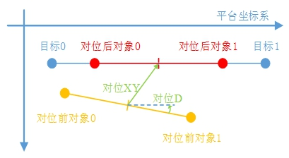
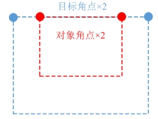
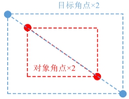
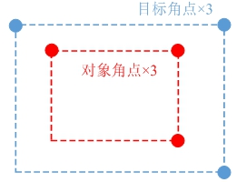
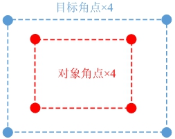
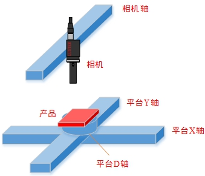
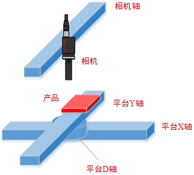
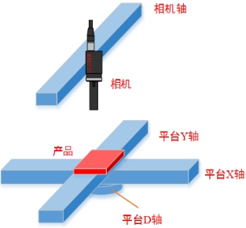

对位是指，在统一的平台坐标系下，根据对象和目标的多个特征，计算机械手/平台运动XYD/XDY/DXY偏移量，使得对象和目标对准重合。最常见的两点对位，如图1所示。

在多点对位计算中，根据采样数量和位置分布的不同，矩形产品的点对位点，分为四种具体场景，即2个相邻点、2个对角点、3个L型点、4个矩形点，如图2所示。
 
 
本工具就用于计算多点间的对位偏移量。目前适用于大于等于2个点的情况，且对象向量与目标向量的长度应相等。
| 分类 | 参数名称 | 参数描述 |
|---|---|---|
| 属性窗口 | 坐标系类型 | 选择是XYD平台坐标系/XDY平台坐标系/DXY平台坐标系下对位。 |
| 图像窗口 | 无 | 无 |
| 数据链 | 对象点坐标向量 | 对象点平台坐标组成的向量。 |
| 目标点坐标向量 | 目标点平台坐标组成的向量。 | |
| 平台轴方向 | 平台各轴的正方向。 | |
| X补偿量 | 输出的对位计算结果在X方向需要增加的补偿量 | |
| Y补偿量 | 输出的对位计算结果在Y方向需要增加的补偿量 | |
| D补偿量 | 输出的对位计算结果在D方向需要增加的补偿量 | |
| 高级界面 | 无 | 无 |
| 分类 | 参数名称 | 参数描述 |
|---|---|---|
| 监视窗口 | 相对对位偏移量 | 计算的相对对位偏移量结果。 |
| 执行结果 | 工具执行结果。 | |
| 执行时间 | 工具执行时间。 | |
| 图像窗口 | 无 | |
| 数据链 | 相对对位偏移量 | 输出计算的相对对位偏移量结果，供后序工具使用，同监视窗口参数。 |
XYD平台：项目中最常见的平台类型，其XY轴呈垂直关系，旋转D轴直接对产品进行旋转，而对XY轴的角度关系无影响，如图3(a)所示。
XDY平台：该平台类型的旋转D轴安装于X轴与Y轴之间，直接决定XY轴之间的夹角。如图3(b)所示。
DXY平台：该平台的XY轴会随D轴旋转而旋转，但XY轴始终保持垂直关系，如图3©所示。

对象点坐标向量与目标点坐标向量中的坐标点顺序需要保持一致，使对象点与目标点对应。
输入的对象点坐标向量或者目标点坐标向量可以通过二元数组生成工具、三元数组生成工具、四元数组生成工具、数组生成工具，数据类型属性选择“GcCoordPos”来获得。
用法参见“\Samples\标准标定+基准四点两线对位.gvp”的多点对位计算工具。